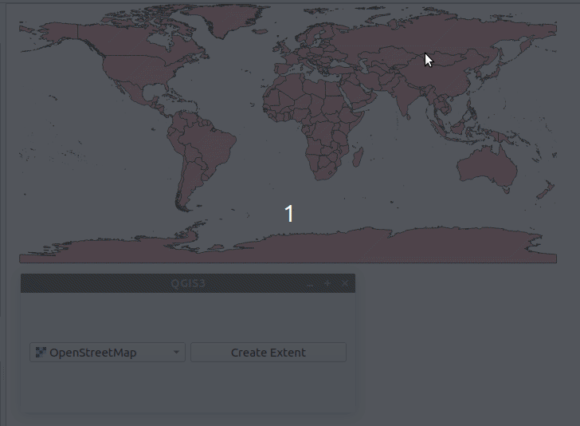

Harjoitus 4: Qt-käyttöliittymät
Harjoituksen sisältö: PyQt:n perusteet.
Harjoituksen tavoite: Ymmärtää Qt-kirjaston toiminnan perusteet ja luoda yksinkertaisia graafisia käyttöliittymiä.
Qt-käyttöliittymistä
QGISin käyttöliittymä on luotu hyödyntäen Qt:ta, joka on C++-kielellä kirjoitettu käyttöliittymäkirjasto ja ohjelmointiympäristö. Qt:ta voidaan kuitenkin käyttää myös muilla ohjelmointikielillä kuten Pythonilla.
QWidget
Qt-kirjasto mahdollistaa käyttöliittymien luomisen. Qt:ssa keskeinen käsite on “Widget”, jota voi ajatella käyttöliittymän yhtenä komponenttina. QWidget on siis Qt:n koodissa luokka, josta periytyy paljon erilaisia alaluokkia, joilla on erilaisia ominaisuuksia. Esimerkkinä vaikka QPushButton, joka käyttöliittymässä on klikattava painike.
Joihinkin widgetteihin voidaan lisätä ns. lapsiwidgettejä (child Widget), mikä mahdollistaa käyttöliittymän suunnittelun. Lapsiwidgetit voidaan järjestää eri asetelmiin (layout), esimerkiksi asettaa ne vaaka- tai pystytasoon sekä ruudukkoon.
Omaan käyttöön voi luoda myös omia widgettejä. Tällöin luodaan oma luokka, joka perii jonkin olemassa olevan widget-luokan. QGISiin on luotu sille ominaisia widgettejä esimerkiksi karttatasojen tai koordinaattijärjestelmän valitsemiseen. Näitä voidaan käyttää myös QGIS-lisäosissa.
Tässä minimiesimerkki käyttöliittymän luomisesta PyQt:lla. Esimerkin voi ajaa jälleen QGISin Python-konsolin skriptieditorissa.
# Luodaan widget ja säädetään sen kokoa
widget = QWidget()
widget.resize(420, 320)
# Luodaan layout ja määritetään se widgetille
layout = QVBoxLayout()
widget.setLayout(layout)
# Luodaan painike ja lisätään se layoutiin
button = QPushButton("Close")
layout.addWidget(button)
# Näytetään widget
# Jos widget itsessään ei ole minkään muun widgetin
# "lapsi", se avautuu uuteen ikkunaan
widget.show()Tässä esimerkissä luodaan “Close”-painike. Sitä painettaessa ei kuitenkaan tapahdu mitään.
Signaalit ja slotit
Toinen keskeinen ajatus Qt-kirjastossa on signaalit ja slotit. Nämä mahdollistavat käyttöliittymän interaktiivisuuden, siten että esimerkiksi painiketta (QPushButton) painettaessa tapahtuu ennalta määritetty toiminto.
Kun widgettien kanssa vuorovaikutetaan, ne lähettävät eri toiminnoista signaaleja, jotka voidaan yhdistää jonkin toisen widgetin slottiin. Qt:n valmiit widgetit sisältävät jo valmiiksi monia signaaleja ja slotteja. Kirjaston käyttäjä voi hyödyntää niitä yhdistämällä signaaleja eri slotteihin, mutta myös omien signaalien ja slottien määrittäminen on mahdollista.
PyQt:ssa signaali on Signal-luokan olio, kun taas slot on funktio, joka yhdistetään signaaliin. Signaali voidaan määritellä lähetettäväksi (emit) eri tilanteissa.
Signaali voidaan yhdistää slottiin seuraavasti, edellistä esimerkkiä hyödyntäen:
widget = QWidget()
widget.resize(420, 320)
layout = QVBoxLayout()
widget.setLayout(layout)
button = QPushButton("Close")
layout.addWidget(button)
# Yhdistetään QPushButtonin "clicked"
# signaali QWidgetin "close" slottiin
button.clicked.connect(widget.close)
widget.show()Nyt painikkeen pitäisi oikeasti sulkea ikkuna.
Harjoitus 4.1: Counter-widget
Kirjoita skripti joka määrittelee uuden, QWidgetin perivän alaluokan
Counter, joka koostuu kahdesta komponentista: QLabel ja QPushButton.
Label on tekstikomponentti. Counter toimii siten, että kun sen painiketta
painetaan, nollasta lähtevä arvo kasvaa aina yhdellä. Arvo näytetään
QLabelissa.

Voit käyttää tätä pohjana skriptille:
class Counter(QWidget):
def __init__(self, *args):
super(Counter, self).__init__(*args)
# Luo widgetit
@pyqtSlot()
def on_increase_clicked(self):
pass
def refresh_label(self):
pass
counter = Counter()
counter.show()class Counter(QWidget):
def __init__(self, *args):
super(Counter, self).__init__(*args)
# Tarvitaan muuttuja johon arvo tallennetaan
self.count = 0
# Tarvitaan layout widgetille
self.layout = QHBoxLayout()
self.label = QLabel()
self.button = QPushButton("Increase")
# Miten lisäät widgetit?
<funktio>
<funktio>
# Miten asetat layoutin tälle
# widgetille?
<funktio>
# Yhdistä painikkeen painallus alla
# määriteltyyn on_increase_clicked
# slottiin
<funktio>
# Päivitä label
<funktio>
@pyqtSlot()
def on_increase_clicked(self):
# Lisää arvoa ja päivitä label
<funktio>
<funktio>
def refresh_label(self):
# Miten voit asettaa QLabelille
# uuden tekstin?
<funktio>
counter = Counter()
counter.show()class Counter(QWidget):
def __init__(self, *args):
super(Counter, self).__init__(*args)
self.count = 0
self.layout = QHBoxLayout()
self.label = QLabel()
self.button = QPushButton("Increase")
self.layout.addWidget(self.label)
self.layout.addWidget(self.button)
self.setLayout(self.layout)
self.button.clicked.connect(self.on_increase_clicked)
self.refresh_label()
@pyqtSlot()
def on_increase_clicked(self):
self.count +=1
self.refresh_label()
def refresh_label(self):
self.label.setText(str(self.count))
counter = Counter()
counter.show()Harjoitus 4.2: QGISin widgetit
Luo käyttöliittymä, jossa käyttäjä valitsee QGIS-projektin tason. Painiketta painamalla luodaan uusi polygonitaso, jossa on yksi kohde. Sille luodaan geometria, joka on suorakaiteen muotoinen polygoni, jonka muoto on valitun tason laajuuden (extent) mukainen.
Tallenna myös fid-tunniste sekä toisena attribuuttina tason nimi, josta laajuus luotiin. Luo uusi polygonitaso koordinaattijärjestelmällä EPSG:4326, ja tarvittaessa muunna lähdetason laajuus samaan koordinaattijärjestelmään. Käytä QgsMapLayerComboBox-widgettiä tason valitsemiseen.
Laajuuden voi laskea taso-oliosta extent()-metodilla.
Se ei kuitenkaan palauta suoraan QgsGeometry-oliota. Selvitä
mitä extent() palauttaa ja miten voit luoda sen
pohjalta geometriaolion.

Voit käyttää tätä pohjaa:
class LayerExtentWidget(QWidget):
def __init__(self, *args):
super(LayerExtentWidget, self).__init__(*args)
# ...
@pyqtSlot()
def on_button_clicked(self):
pass
def create_layer(self, layer: QgsMapLayer):
new_layer = QgsVectorLayer("Polygon?crs=EPSG:4326", f"laajuus: {layer.name()}", "memory")
new_layer.startEditing()
new_layer.addAttribute(QgsField("fid", QVariant.Int))
new_layer.addAttribute(QgsField("layer", QVariant.String))
# ...
new_layer.commitChanges()
QgsProject.instance().addMapLayer(new_layer)class LayerExtentWidget(QWidget):
def __init__(self, *args):
super(LayerExtentWidget, self).__init__(*args)
layout = QHBoxLayout()
self.layer_combobox = QgsMapLayerComboBox()
self.button = QPushButton("Create Extent")
layout.addWidget(self.layer_combobox)
layout.addWidget(self.button)
self.setLayout(layout)
self.button.clicked.connect(self.on_button_clicked)
self.resize(420, 150)
@pyqtSlot()
def on_button_clicked(self):
layer = self.layer_combobox.currentLayer()
self.create_layer(layer)
def create_layer(self, layer: QgsMapLayer):
new_layer = QgsVectorLayer("Polygon?crs=EPSG:4326", f"laajuus: {layer.name()}", "memory")
new_layer.startEditing()
new_layer.addAttribute(QgsField("fid", QVariant.Int))
new_layer.addAttribute(QgsField("layer", QVariant.String))
new_feature = QgsFeature(new_layer.fields())
new_feature.setAttributes([1, layer.name()])
new_geom = QgsGeometry.fromRect(layer.extent())
source_crs = layer.crs()
target_crs = QgsCoordinateReferenceSystem(4326)
if source_crs != target_crs:
transform = QgsCoordinateTransform(source_crs, target_crs, QgsProject.instance())
new_geom.transform(transform)
new_feature.setGeometry(new_geom)
new_layer.addFeature(new_feature)
new_layer.commitChanges()
QgsProject.instance().addMapLayer(new_layer)
extent_widget = LayerExtentWidget()
extent_widget.show()